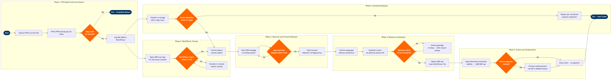

Lost & Found / Baggage Tracing
Ground Operations & Airport Services › Baggage Operations · 18 L4 steps · 6 phases · 4 decision gates · Updated 2026-10-01 21:58
📊
Process Flow Diagram (BPMN)

📋
L4 Process Steps
| Step | Step Name | Role / Swim Lane | System | Input | Output | KPI | Dec? | Exc? |
|---|---|---|---|---|---|---|---|---|
Phase 1 1.1 |
Capture Property Irregularity Report at arrival hall | Baggage Service Agent | SITA WorldTracer | Passenger complaint at baggage claim; flight arrival manifest | PIR reference number; AHL (mishandled bag) file opened in WorldTracer | PIR captured within 20 min of carousel clearance ≥98% | N | N |
| 1.2 | Verify PNR and bag tag details in Altéa | Baggage Service Agent | Amadeus Altéa PSS | Passenger boarding pass or booking reference; PIR form | Confirmed bag tag number(s), itinerary, and contact details linked to PIR | PNR match rate ≥99.5%; missing bag tag resolved via passenger description within 15 min | N | Y |
| 1.3 | Search local carousel, offload area, and left baggage | Ramp Supervisor | SITA BagManager | Bag tag number; flight load manifest from BRS | Physical search result; BagManager scan log confirming whether bag was offloaded locally | Local recovery rate ≥35% within 30 min of PIR opening | Y | N |
| 1.4 | Assess local scan log — bag present at station? | Baggage Service Agent | SITA BagManager | BRS sortation scan history for bag tag | Decision: bag located locally (return immediately) or escalate to WorldTracer trace | Same-day resolution for locally present bags ≥95% | Y | N |
Phase 2 2.1 |
Create AHL/OHD/DPR tracing message in WorldTracer | Baggage Tracing Agent | SITA WorldTracer | PIR reference; confirmed bag tag, description, and itinerary | WorldTracer AHL file broadcast to all stations on itinerary; OHD files requested from origin and transit stations | AHL file created within 2 hrs of PIR ≥99%; OHD response from partner stations ≤4 hrs | N | Y |
| 2.2 | Query BRS scan history for last known bag location | Baggage Tracing Agent | SITA BagJourney | Bag tag number; WorldTracer AHL reference | Chronological scan event log identifying last confirmed airport and handler | Last-scan data available within 5 min for ≥95% of bags with electronic tags | N | N |
| 2.3 | Evaluate WorldTracer match within 24-hour window | Baggage Tracing Supervisor | SITA WorldTracer | AHL file; incoming OHD and FWD messages; BagJourney scan log | Match confirmed or escalation to manual canvass; WorldTracer case status updated | First match rate within 24 hrs ≥72% (IATA Resolution 743 target); escalation triggered <28% | Y | N |
Phase 3 3.1 |
Send FWD message to station holding located bag | Baggage Tracing Agent | SITA WorldTracer | Confirmed bag location from WorldTracer OHD/match; passenger delivery address | FWD telex dispatched; holding station instructed to ship bag on next available service | FWD message sent within 30 min of match confirmation ≥98% | N | Y |
| 3.2 | Confirm bag shipped and track via BagJourney | Baggage Service Agent | SITA BagJourney | FWD message acknowledgment; airway bill or rush tag number | Real-time shipment tracking record; passenger notified of estimated arrival | Forward shipment confirmed (scan at origin) within 4 hrs of FWD message ≥90% | Y | N |
| 3.3 | Receive forwarded bag at destination and verify condition | Ramp Agent | SITA BagManager | Inbound bag with rush tag; WorldTracer FWD reference | Bag receipt confirmed in BagManager; condition noted; WorldTracer status updated to RFL (ready for delivery) | Bag condition documented at receipt ≥99%; damaged bags flagged for claims within 1 hr | N | Y |
Phase 4 4.1 |
Contact passenger to confirm delivery preference | Baggage Service Agent | Amadeus Altéa PSS | Passenger contact details from PNR; bag RFL status in WorldTracer | Confirmed delivery address or airport pickup slot; passenger notified via SMS/email | Passenger contacted within 1 hr of RFL status ≥95%; delivery preference captured ≥98% | N | N |
| 4.2 | Schedule courier delivery via third-party delivery API | Baggage Service Agent | WorldTracer Delivery Manager (SITA) | Passenger delivery address; bag dimensions and weight; service SLA | Courier booking confirmation; tracking number shared with passenger | Courier dispatched within 2 hrs of passenger confirmation ≥92%; delivery within 24 hrs of dispatch ≥85% | N | N |
| 4.3 | Confirm delivery and obtain proof of receipt | Baggage Service Agent | WorldTracer Delivery Manager (SITA) | Courier delivery confirmation or passenger airport pickup signature | Proof of delivery (POD) attached to WorldTracer file; file status updated to CLO (closed) | POD captured and attached to WorldTracer within 24 hrs of delivery ≥99%; WorldTracer file closed within 48 hrs of delivery | N | N |
Phase 5 5.1 |
Assess interim expense claim under Montreal Convention | Baggage Claims Agent | SAP S/4HANA Finance (FI/CO) | Passenger expense receipts; days without bag; Montreal Convention Article 19 liability schedule | Approved interim expense amount (capped at 1,288 SDR); claim reference created in SAP | Interim claim assessed within 48 hrs of PIR ≥90%; average claim processing time ≤5 business days | N | N |
| 5.2 | Process approved compensation payment via SAP Finance | Baggage Claims Supervisor | SAP S/4HANA Finance (FI/CO) | Approved claim amount; passenger bank/card details; SAP vendor master record | Payment processed; remittance advice sent to passenger; WorldTracer file updated with settlement amount | Payment executed within 7 business days of approval ≥95%; zero unapproved payments exceeding liability cap | N | Y |
Phase 6 6.1 |
Transfer unmatched bag to lost baggage storage at day 5 | Baggage Tracing Supervisor | SITA WorldTracer | WorldTracer AHL file with no match after 5-day active trace; physical bag in holding area | WorldTracer status changed to STO (storage); bag catalogued with photo in WorldTracer Found Bag module | 100% of unmatched bags transferred to STO status by day 5; storage catalogue photo quality ≥95% usable | N | N |
| 6.2 | Conduct extended 21-day owner identification search | Baggage Tracing Agent | SITA WorldTracer | STO bag record; WorldTracer auto-match; passenger-initiated trace enquiries | Owner identified and reunited (return to step 3.1) or case escalated to unclaimed disposal | Overall bag reunification rate within 21 days ≥97% (IATA Baggage Report benchmark); unclaimed rate <3% | N | N |
| 6.3 | Dispose of unclaimed bag per property regulation | Baggage Service Manager | SITA WorldTracer | Unclaimed STO bag at day 22+; local unclaimed property legislation requirements | Bag disposed (donated, auctioned, or destroyed) per local law; WorldTracer file closed with disposal notation | 100% of disposed bags documented with disposal method and date; zero regulatory non-compliance events | N | N |
📋